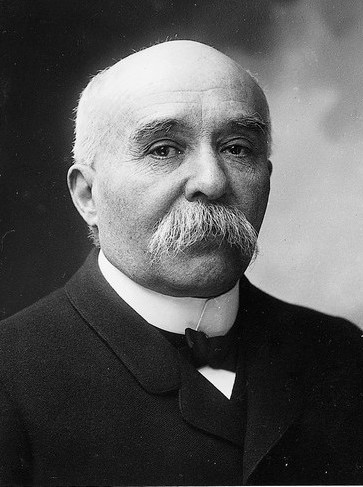

จอร์จ คลีเมนโซ (Georges Clemenceau)

คือนายกรัฐมนตรีของฝรั่งเศสในช่วงสงครามโลกครั้งที่ 1 ผู้ได้รับฉายาว่า "พยัคฆ์ร้ายแห่งฝรั่งเศส" (The Tiger) จากบทบาทการนำประเทศที่ดุดัน เด็ดขาด และเกลียดชังเยอรมนีอย่างรุนแรงในเหตุการณ์สงครามโลกครั้งที่ 1 คลีเมนโซมีบทบาทขัดแย้งและตัดกันโดยสิ้นเชิงกับ วูดโรว์ วิลสัน ดังนี้ครับ1. ผู้นำเผด็จศึกของฝรั่งเศส (1917–1918)เข้าดำรงตำแหน่งนายกรัฐมนตรีในปี 1917 ในช่วงที่ฝรั่งเศสกำลังอ่อนแอและท้อแท้จากสงครามเขาปลุกระดมขวัญกำลังใจคนในชาติด้วยนโยบายเดียวคือ "สงครามทั้งหมดเพื่อชัยชนะ" และปฏิเสธการเจรจาสันติภาพใดๆ จนกว่าเยอรมนีจะพ่ายแพ้ราบคาบ2. คู่ปรับทางความคิดของ วูดโรว์ วิลสัน ในการประชุมแวร์ซาย (1919)หลังสงครามจบลง คลีเมนโซ เป็น 1 ใน 3 ผู้นำมหาอำนาจ (Big Three) ร่วมกับวิลสัน (สหรัฐฯ) และลอยด์ จอร์จ (อังกฤษ) ในการร่างสนธิสัญญาแวร์ซาย ซึ่งแนวคิดของเขาตรงข้ามกับวิลสันอย่างสิ้นเชิง:วิลสัน: ต้องการสันติภาพที่ยุติธรรมผ่าน "หลักการ 14 ข้อ" ไม่เน้นลงโทษผู้แพ้คลีเมนโซ: ต้องการ "ล้างแค้นและทำลายเยอรมนี" ให้ราบคาบ เพื่อไม่ให้เยอรมนีกลับมาทำร้ายฝรั่งเศสได้อีก เพราะฝรั่งเศสบอบช้ำที่สุดจากการถูกรุกราน3. ผลลัพธ์ในสนธิสัญญาแวร์ซายคลีเมนโซประสบความสำเร็จในการกดดันให้เยอรมนีต้องรับบทลงโทษที่รุนแรง ได้แก่:บังคับให้เยอรมนียอมรับว่าเป็น "ผู้รับผิดชอบสงครามแต่เพียงผู้เดียว"บังคับจ่าย ค่าปฏิกรรมสงคราม มหาศาลยึดดินแดนอัลซาส-ลอเรน คืนให้ฝรั่งเศส และจำกัดกองทัพเยอรมันจนแทบไม่เหลือแสนยานุภาพ